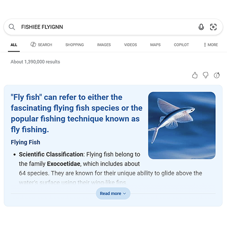

I like fishes. I like angel fishes. Pterophyllum is a small genus of freshwater fish from the family Cichlidae known to most aquarists as angelfish.
All Pterophyllum species originate in the Amazon Basin, Orinoco Basin and various rivers in the Guiana Shield in tropical South America....

You are wrong, but that’s okay. Let’s keep talking.
Go home.